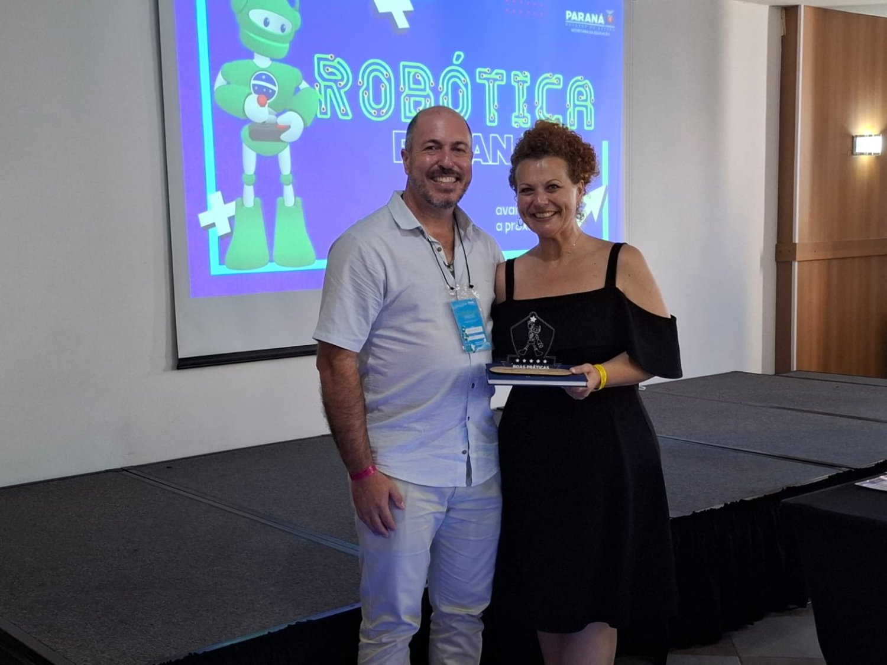

Experimentação
Simulações e desafios para formular hipóteses, testar estratégias e observar resultados.
Um espaço de documentação e investigação sobre tecnologias de aprendizagem, seus fundamentos, suas conexões curriculares e suas possibilidades de avaliação.
Os recursos buscam criar oportunidades de aprendizagem ativa. Os benefícios abaixo são objetivos pedagógicos, não efeitos já comprovados por estudos.
Simulações e desafios para formular hipóteses, testar estratégias e observar resultados.
Decomposição, reconhecimento de padrões, abstração, algoritmos e resolução de problemas.
Conexões entre matemática, ciências, astronomia, programação, arte e história.
Jogos e missões que favorecem discussão, comunicação e decisões em equipe.
Exploração com escolhas, feedback e oportunidades de revisão de estratégias.
Reflexões sobre dados, metadados, segurança, privacidade e uso crítico da IA.
Registros iniciais derivados do histórico de criação e testes. Cada projeto poderá receber futuramente ficha de atividades, versões, registros de aplicação e instrumentos de avaliação.
Geometria, lógica, robótica, programação e desafios; potencial para visualização espacial e algoritmos.
Plataforma desenvolvida; evidências de aprendizagem a sistematizar.Sistema Solar, céu noturno, história da astronomia, luz, distâncias e missões espaciais.
Módulos interativos desenvolvidos; avaliação pedagógica a estruturar.Jogo STEAM com checkpoints, desafios e participação coletiva; adaptação de proposta física.
Regras e testes funcionais documentados; impacto ainda não aferido.Representações de sequências, fórmulas, ondas e gráficos para investigar relações matemáticas.
Beta; desafio observado de conectar visualização e compreensão matemática.Missões sobre circuitos, polaridade, componentes, energia e eletrônica.
Atividades descritas; rubricas e acessibilidade a avaliar.Estratégia, sequenciação, lógica e resolução colaborativa de desafios.
Experiências desenvolvidas; aplicações por turma a documentar.Alinhamentos preliminares, sujeitos à conferência de etapa, componente curricular, objetivo da atividade e código oficial da habilidade.
| Referencial | Conexões possíveis | Aplicação |
|---|---|---|
| BNCC | Competências gerais 1 (conhecimento), 2 (pensamento científico, crítico e criativo), 4 (comunicação), 5 (cultura digital) e 9 (empatia e cooperação). | Planejamento e análise de atividades. |
| BNCC Computação | Pensamento Computacional, Mundo Digital e Cultura Digital. | Algoritmos, programação, dados e segurança. |
| Diretrizes Curriculares Nacionais | Formação integral e articulação de conhecimentos. | Contextualização e organização pedagógica. |
| WCAG 2.2 — W3C | Diretrizes técnicas de acessibilidade para conteúdo web. | Contraste, legibilidade, teclado e alternativas textuais. |
Relacionar ano, habilidade oficial, objetivo, recurso utilizado, evidência observável e forma de avaliação.
Registrar problema pedagógico, público, hipótese e objetivos.
Preservar versões, decisões, correções e testes em diferentes dispositivos.
Documentar atividades em sala, respeitando privacidade e consentimento.
Reunir evidências de aprendizagem sem confundir acesso ou entusiasmo com eficácia.
Testar acessibilidade e ajustar experiências às necessidades dos estudantes.
Distinguir concepção pedagógica humana do apoio de IA na implementação.
Seleção inicial de arquivos visuais já presentes nos projetos publicados. As imagens são identificadas por sua função documental; não são apresentadas como fotografias de alunos nem como provas de eficácia pedagógica. Metadados EXIF e datas de captura ainda não foram auditados.

Identidade e apresentação da plataforma

Identidade visual do observatório digital

Registro visual associado ao projeto STEAM

Registro visual relacionado às iniciativas de robótica

Identidade da experiência de matemática visual

Comunicação, mensagens e expressão
Marcos relatados durante a criação dos projetos. As datas representam períodos de trabalho registrados nas conversas e não substituem os históricos de commits ou documentos institucionais.
Arroba 2.0 e VAAM: experiências com sensores, microcontroladores, automação e robótica aplicada.
Projeto com ESP32, comunicação LoRa e localização GPS, associado a reconhecimentos em competições de inovação e robótica informados pelo autor. Documentos comprobatórios podem ser vinculados.
Desenvolvimento e refinamento do Tangram Educativo, CARL, RunnBoot Digital, Universo dos Números e laboratórios de programação e robótica.
Organização dos referenciais curriculares, das imagens do acervo, dos objetivos pedagógicos e dos limites das evidências atualmente disponíveis.
Acessos agregados, dispositivos, estabilidade, duração de sessão e conclusão de desafios. Métricas de acesso não equivalem a aprendizagem.
Objetivos, rubricas, produções, pré e pós-atividades, observações docentes e dificuldades recorrentes. Publicar resultados apenas após coleta e análise.
Identificador, projeto, versão, origem, tipo de mídia, data verificável, contexto, autorização e vínculo com a atividade. Preservar a distinção entre dado e relato.
O acompanhamento de acessos e interações pode ajudar a compreender o alcance e a utilização dos projetos. Este painel apresenta a metodologia e os indicadores a consultar; não exibe valores reais enquanto não houver extração autenticada e validada do GA4.
Usuários ativos, novos usuários, sessões e evolução por período. Comparar períodos equivalentes e identificar possíveis efeitos de divulgação.
Valor: aguardando consulta ao GA4Sessões engajadas, taxa de engajamento e tempo médio de engajamento; analisar por aplicativo e página.
Valor: aguardando consulta ao GA4Distribuição por computador e celular, páginas mais visitadas, fluxos de navegação e eventuais saídas.
Valor: aguardando consulta ao GA4app_open (abertura de aplicativo), activity_start (início de desafio), activity_complete (conclusão), help_open (consulta a explicações) e navigation_return (retorno entre telas). Esses são nomes propostos; não há confirmação de que estejam implementados. Não enviar nomes, e-mails, respostas livres ou identificadores de estudantes como parâmetros.
Os números deverão ser importados de relatórios reais do GA4, com propriedade, intervalo de datas, fuso e data da extração identificados.
Abrir Google Analytics ↗Os aplicativos não são apenas materiais complementares às aulas. Podem oferecer situações de aprendizagem por exploração, experimentação, jogo, produção e resolução de problemas. A intenção pedagógica deve estar presente nas regras, no feedback, nos modelos e nas decisões solicitadas ao participante — sem pressupor que diversão, acertos ou tempo de tela comprovem aprendizagem.
Como o estudante planeja, testa, revê e explica suas escolhas? Uma tentativa malsucedida pode revelar raciocínio importante.
O participante consegue relacionar o desafio a uma regra, modelo, conceito científico ou procedimento matemático?
Consegue aplicar o que aprendeu a um problema diferente, sem depender da mesma interface ou das mesmas dicas?
As propostas podem ser analisadas à luz de aprendizagem experiencial, construcionismo, investigação orientada, resolução de problemas, avaliação formativa e aprendizagem baseada em jogos. Essas abordagens são lentes de interpretação, não selos de eficácia dos aplicativos.
Referências introdutórias: UNESCO — Educação Digital ↗ · BNCC — MEC ↗.
Descrever regras, objetivo, decisões cognitivas, dificuldade progressiva, mediação opcional e indicadores observáveis para cada missão.
Desafios, jogos, simulações e exploração livre também podem constituir situações de aprendizagem. Seu valor depende de intencionalidade, qualidade do problema, feedback, reflexão e mediação adequada, não apenas de uma sequência didática pronta.
Manipular, observar, confrontar hipóteses e revisar ações.
Planejar estratégias, experimentar, identificar erros e explicar soluções.
Usar missões e progressão para favorecer participação sem confundir pontos com aprendizagem.
Visualizar fenômenos abstratos, reconhecendo simplificações e limites dos modelos.
Oferecer exploração no próprio ritmo, com instruções claras e alternativas acessíveis.
Observar estratégias e justificativas, além de acertos e métricas de acesso.
Matriz inicial de intencionalidade pedagógica dos aplicativos e módulos. As correspondências curriculares são propostas amplas; os códigos oficiais de habilidades exigem conferência por etapa e atividade.
| Aplicativo / módulo | Atividade ou desafio | Aprendizagem potencial | Mediação e evidência observável | Referência curricular inicial |
|---|---|---|---|---|
| Tangram e Mosaicos | Montar, girar, espelhar e comparar peças | Visualização espacial, composição e decomposição, explicação de estratégias | Explicar escolhas e comparar soluções | Matemática; competências gerais 2 e 5 |
| Torre de Hanói | Planejar movimentos sob regras e restrições | Raciocínio algorítmico, previsão, depuração | Registrar sequência e analisar erros | Pensamento Computacional |
| Arena X1 | Resolver desafios em equipes e turnos | Comunicação, colaboração, autorregulação e lógica | Justificar respostas e valorizar cooperação | Competências gerais 4, 5 e 9 |
| Laboratório de Robótica | Experimentar circuitos, polaridade, componentes e energia | Investigação causal, modelagem e segurança | Prever resultados e confrontar hipóteses | Ciências da Natureza |
| RAI Code | Programar blocos em labirinto, pingue-pongue e defesa aérea | Sequenciamento, eventos, condicionais e depuração | Comparar código e comportamento observado | BNCC Computação |
| RunnBoot Digital | Desbloquear checkpoints e responder desafios STEAM | Integração de saberes e tomada de decisão coletiva | Explicar estratégias e revisar erros | STEAM; competências gerais 2, 4, 5 e 9 |
| CARL — Sistema Solar | Explorar órbitas, luas, astros e escalas | Modelos, movimento e relações espaciais | Distinguir modelo e proporções reais | Ciências da Natureza |
| CARL — Céu Noturno | Investigar constelações, orientação e história do céu | Observação, tempo, navegação e cultura científica | Relacionar data, lugar e céu observado | Ciências, Geografia e História |
| CARL — Luz e Distâncias | Explorar velocidade da luz e distâncias astronômicas | Grandezas, proporcionalidade e modelagem | Estimar e discutir limites de representação | Matemática e Ciências |
| Universo dos Números | Alterar parâmetros, fórmulas, ondas e gráficos | Variáveis, padrões e representação matemática | Prever efeitos antes de mudar valores | Matemática e modelagem |
| PhotoSphera | Analisar enquadramento e metadados de fotos | Leitura crítica, autoria e privacidade | Comparar imagens e discutir dados revelados | Linguagens e Cultura Digital |
| Realejo | Ler, criar e compartilhar mensagens | Leitura, interpretação e comunicação | Discutir intenção, fonte e destinatário | Linguagens; competências 4 e 9 |
| RAI Connect | Comunicar-se e compartilhar em grupos | Netiqueta, segurança e cooperação | Simular situações e discutir convivência | Cultura Digital |
O estudante entende o objetivo e sua relação com o conhecimento?
O retorno esclarece o raciocínio ou apenas informa certo e errado?
Há desafios graduais, apoio inicial e possibilidade de tentar novamente?
A estratégia aprendida pode ser aplicada a outro problema?
Há alternativas para diferentes ritmos, dispositivos e necessidades?
É possível observar estratégias sem expor dados pessoais?